Gear Guide
What to actually buy at every budget — from a smartphone you'll shoot with for the next year, to a $6,000 flagship body that will outlive your next three laptops. We recommend by skill level and use case, not by spec sheet.
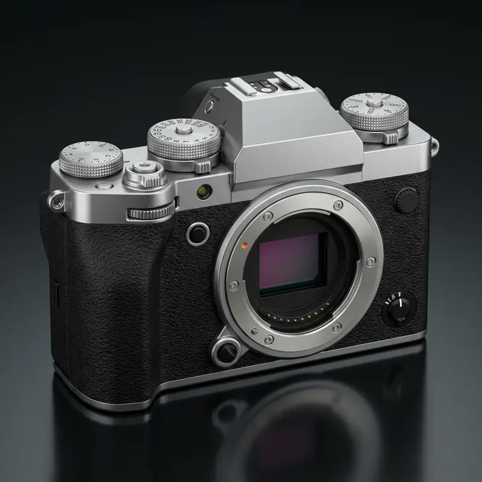
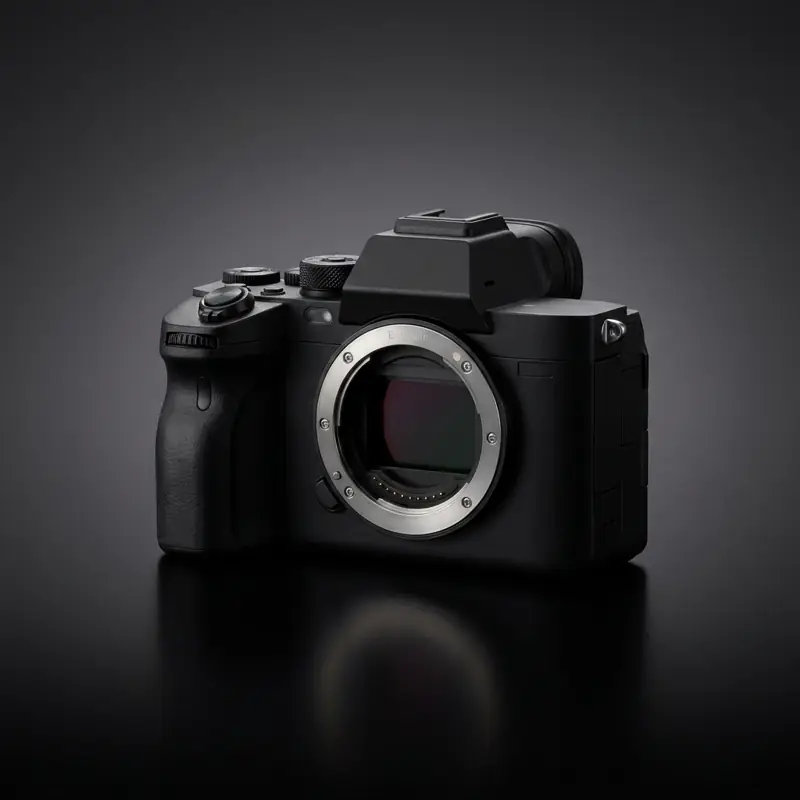
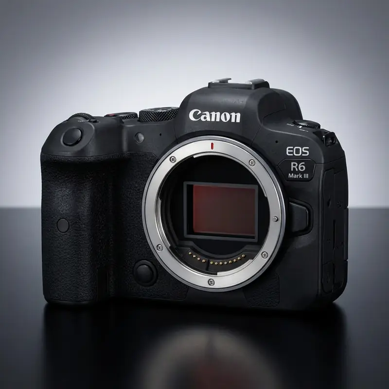
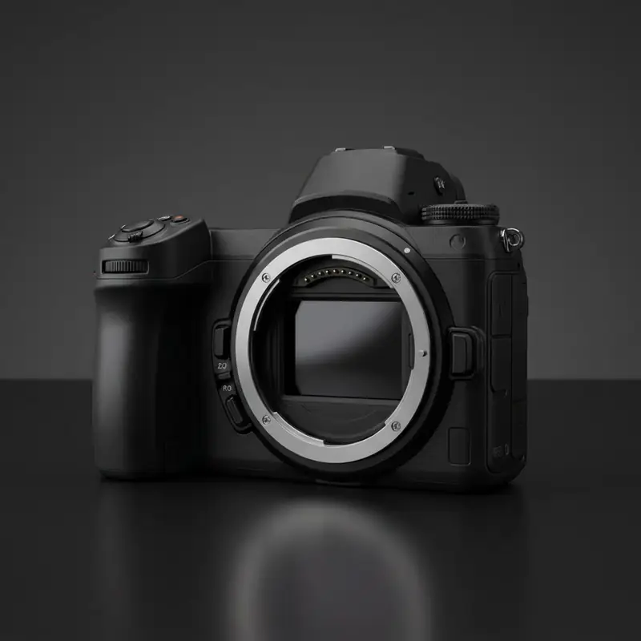
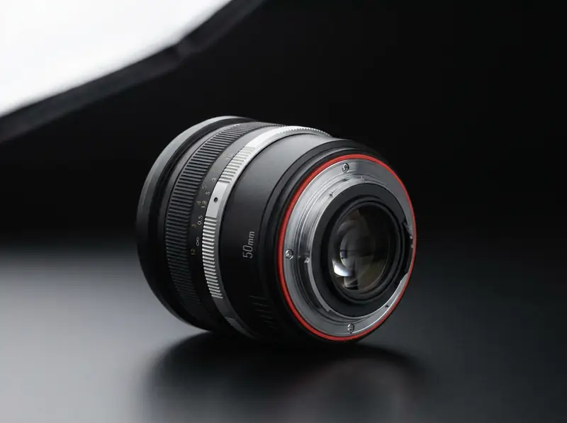
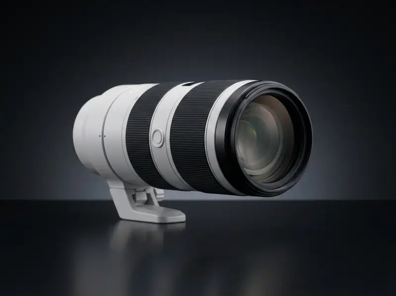
Affiliate disclosure. Some links on this page are affiliate links to B&H Photo, Adorama, and Amazon. If you purchase through these links, Apertura may earn a small commission at no extra cost to you. Our recommendations are made independently — we do not receive compensation from any camera manufacturer, and our rankings are based on the research and expertise documented on this page, not on commercial relationships.
Start with what you have
Modern phones (2023 or newer) take genuinely excellent photos in good light. If you are at Level 1 of the curriculum, the most expensive thing you can do is skip the camera purchase and spend your first six months learning composition and light with the camera you already carry every day. When you outgrow the phone — when you find yourself wanting shallow depth of field, optical zoom, or low-light performance that a phone physically cannot deliver — that is the right time to buy a real camera.
Best camera phones (2025–2026)
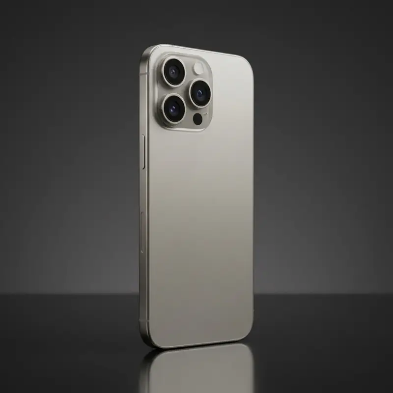
Apple iPhone 17 Pro / Pro Max
Best-in-class video, 4K/120fps, ProRAW + LOG. The default choice if you shoot video at all.
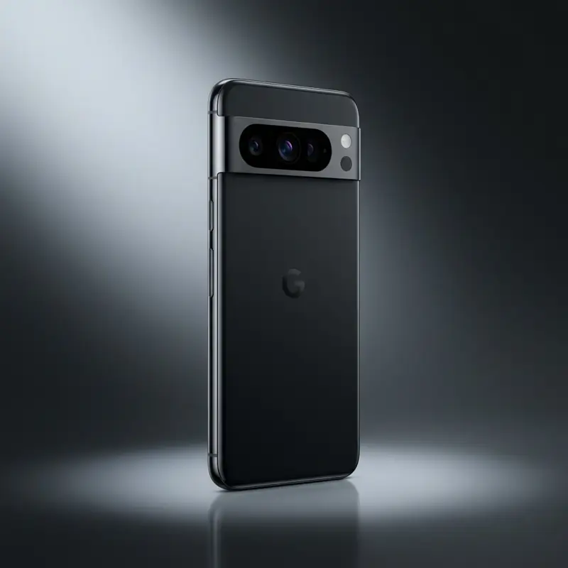
Google Pixel 10 Pro / Pro XL
View latest price ↗AI-driven computational photography, outstanding low-light and night mode, best point-and-shoot on Android.
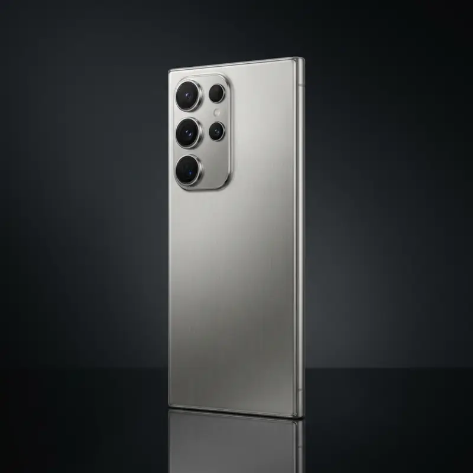
Samsung Galaxy S26 Ultra
View latest price ↗Most versatile hardware with two real telephotos (3x and 5x periscope) and 100x Space Zoom.
Google Pixel 10a
Budget pick. The main camera is nearly indistinguishable from the 10 Pro in good light. Best value in phones.
Pro tip · Shoot in ProRAW (iPhone) or RAW (Pixel Expert RAW, Samsung Expert RAW). The whole point of using a phone at this stage is to learn the RAW editing workflow before you spend money on a real camera.
Tier 1 · Beginner
Your first interchangeable-lens camera
$500 – $900 with kit lens
You have completed the Foundation level. You understand exposure, focus, and white balance. You want a real camera with a larger sensor than a phone, manual controls, and the ability to swap lenses. Do not spend more than $900 on a body at this stage. The skill ceiling of a $900 body is well above your current skill ceiling — save the rest for lenses, which you will keep for years; camera bodies change every 3-5 years.
Top picks
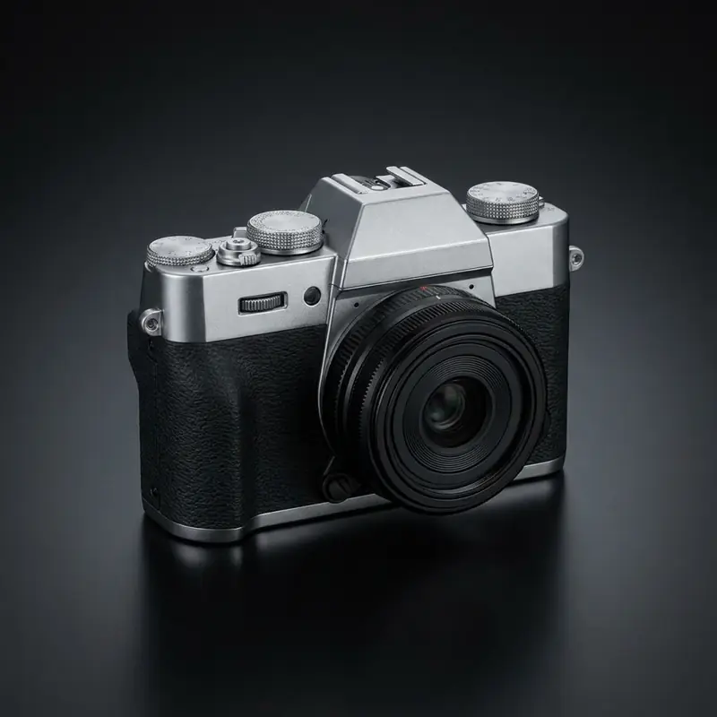
Fujifilm X-T30 III
Compact, beautiful retro dials that teach you to think in physical aperture/shutter/ISO dials. Fuji's film simulations mean you can deliver JPEGs straight out of camera while you learn. The X-mount lens lineup is one of the best in any system. Best for: students who want to learn on dials, not menus.
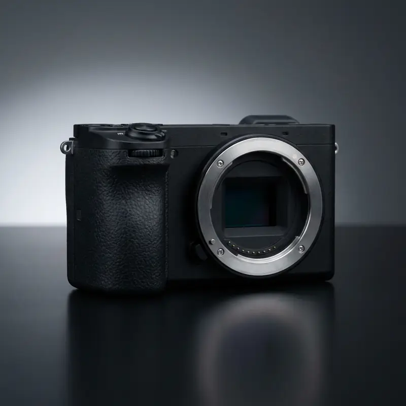
Sony α6100 (refurbished) or α6400
Sony's autofocus is class-leading — you will not miss shots. Most lens selection of any APS-C system. Slightly more menu-driven than the Fuji. Best for: students who want the widest lens choice and best tracking autofocus.
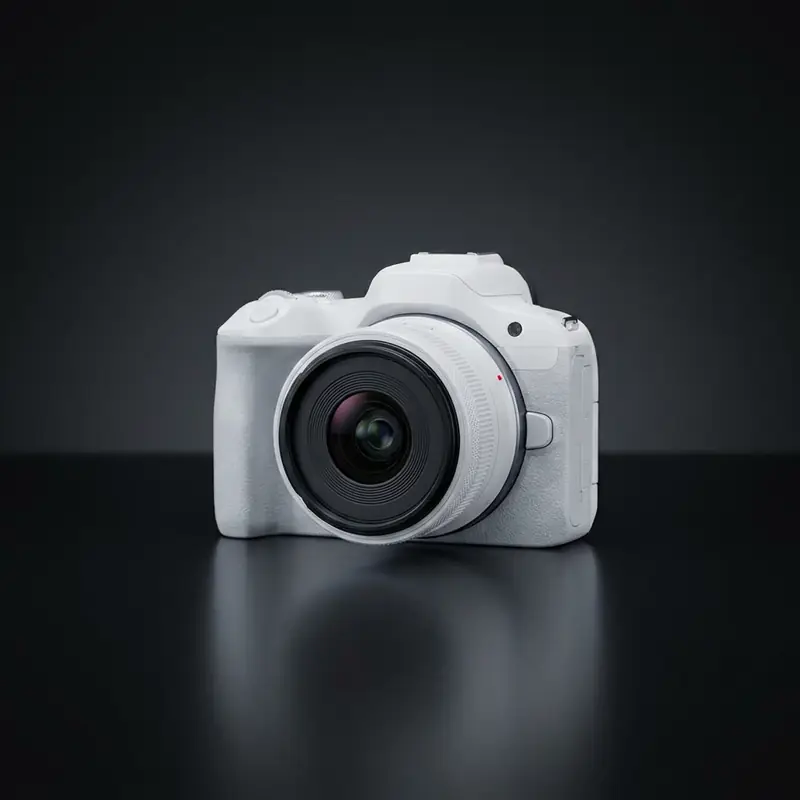
Canon EOS R50
Lightest and most beginner-friendly. Excellent subject-detection AF. Limited RF-S native lens selection, but can mount full-frame RF lenses. Best for: total beginners who want the lightest possible body and the most guided menus.
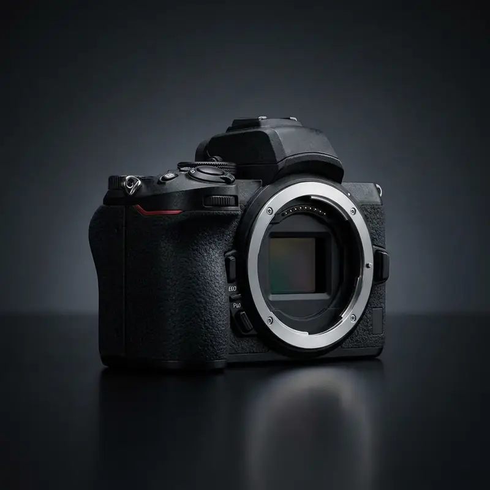
Nikon Z50 II
Best-in-class ergonomics for the price. Excellent subject-recognition AF inherited from the Z8/Z9. Built-in flash (rare these days). Battery life is the weakness — buy a spare. Best for: students who want to grow into the full-frame Z system later.
What to buy with the body
Skip the manufacturer kit zoom for the second lens. Use the kit zoom for 30 days, then buy one fast prime (nifty fifty). On a phone, you cannot blur the background. On a camera, a 50mm f/1.8 is the cheapest way to learn what shallow depth of field actually feels like.
- First add-on lens: A "nifty fifty" — the 50mm f/1.8 in your mount. Usually $100-$200 used. Teaches you everything about depth of field.
- Memory card: One fast UHS-II SD card (64GB minimum). Skip the manufacturer's bundled card if it is slow.
- Skip for now: Tripod, flash, filters, extra batteries (you can add one battery in month 3 if you need it).
Tier 2 · Intermediate
Your first full-frame (or high-end APS-C) camera
$1,200 – $1,800 with kit lens
You have completed the Intermediate level. You have shot 5,000+ frames. You know what you like to photograph. You want shallower depth of field, better low-light performance, and the confidence to shoot at ISO 6400 without worry. This is the sweet spot for most serious hobbyists — full-frame sensors deliver visibly better images than phones or entry-level APS-C in any condition that is not bright daylight.
Top picks (full-frame)
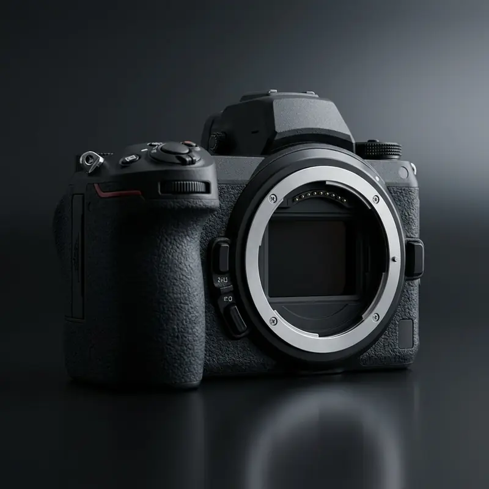
Nikon Z5 II
The best value in full-frame mirrorless right now. Excellent dynamic range, accurate subject-recognition AF, 5-axis in-body stabilization, weather sealing. Best for: hobbyists who want to grow into pro-grade Z-mount glass over the next 5-10 years.
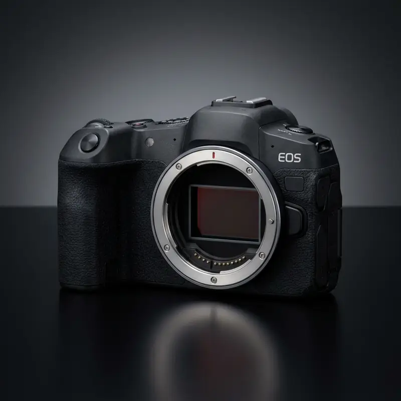
Canon EOS R8
Lightest full-frame Canon ever made. 40fps burst is overkill for stills but amazing for wildlife/action. No IBIS (Canon's trade-off for weight savings). Best for: hybrid shooters who do equal video and stills.
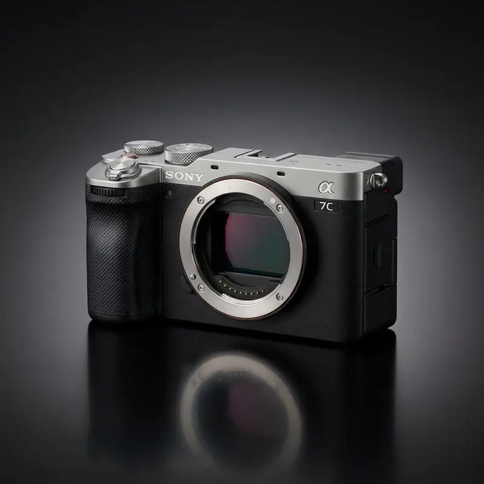
Sony α7C II
The most compact full-frame body with the same sensor as the A7 IV. AI-driven autofocus inherited from the A7R V. The Sony E-mount lens lineup is the largest and most diverse of any system. Best for: travel photographers and anyone who wants full-frame in the smallest possible body.
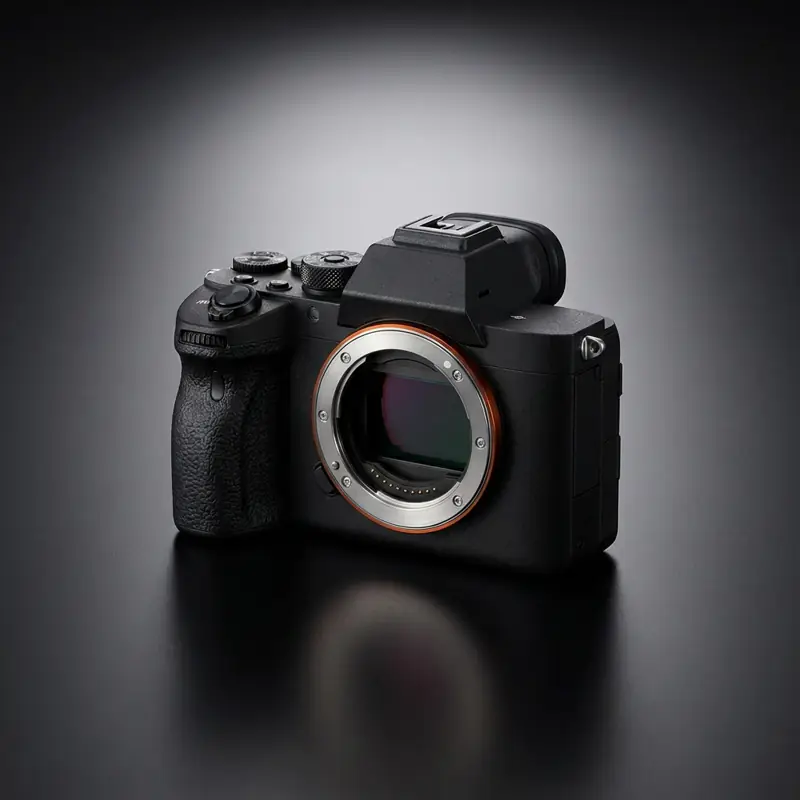
Sony α7 IV (used or refurbished)
The workhorse of the last 5 years. Used prices have dropped significantly as the A7 V arrives. Still 90% of the camera the A7 V is. Best for: budget-conscious buyers who want the Sony system without the A7 V premium.
Top picks (premium APS-C — staying in crop)
Fujifilm X-T5
40MP on APS-C is class-leading resolution. Beautiful retro controls. Best-in-class film simulations. The X-mount lens system is genuinely deep. Best for: photographers who do not need full-frame bokeh but want the highest-resolution APS-C body.
Sony α6700
Sony's best APS-C body. Class-leading autofocus. 4K/120p for slow motion. Uses the same E-mount as Sony's full-frame bodies, so lenses are interchangeable. Best for: hybrid APS-C shooters who want Sony AF and lens ecosystem.
What to buy with the body
- 50mm f/1.8 (or 35mm f/1.8 for wider view) — the nifty fifty, in your mount. $100-$300. Teaches you depth of field.
- 24-70mm f/2.8 (used) or f/4 (new) — the workhorse zoom for events, travel, and family. $500-$1,000.
- One specialty prime — 85mm for portraits, 35mm for street, 16-35mm wide-angle for landscapes. Add as your work demands it.
- Memory cards: 2x UHS-II SD (or CFexpress Type A/B if you bought a Sony/Canon flagship). The kit card is always too slow.
- 1-2 spare batteries. Mirrorless chews power; you will need them on a full shoot day.
Tier 3 · Advanced
High-end full-frame for serious work
$1,900 – $3,000 body only
You are working photographers, advanced students, or serious hobbyists producing portfolio-grade work. You shoot in difficult conditions — events, weddings, wildlife, low light, fast action. You need reliable autofocus that just works, dual card slots, weather sealing, and a body that will not let you down on a paid shoot. These are the mid-range full-frame bodies that competing reviews call "the best balance" in 2025–2026.
Top picks
Sony α7 V
The most balanced full-frame of 2025. Sony's first partially-stacked sensor in an A7 body, fixing the rolling shutter of the A7 IV. 16 stops of dynamic range (best in class). Sony's AI-powered subject detection AF is still class-leading. Best for: working photographers who do mixed work — stills, video, portraits, events — and need one body to do it all.
Canon EOS R6 Mark III
Canon's most reliable autofocus in 2025. The 40fps electronic shutter is class-leading for action. 7K RAW internal video. Trade-off: no stacked sensor (rolling shutter is slightly worse than the A7 V in silent shooting). Best for: sports, wildlife, and event photographers who need bulletproof AF.
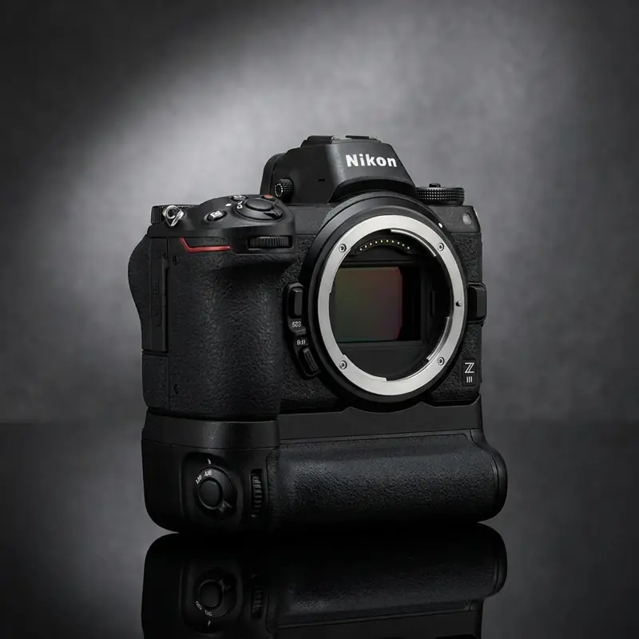
Nikon Z6 III
The best value in this tier. Sensor readout speed rivals much pricier stacked-sensor bodies (great for video). Best-in-class low-light AF. Slightly lower resolution than the A7 V and R6 III, but the dynamic range is the same. Best for: photographers who want 90% of flagship performance at 70% of the price.
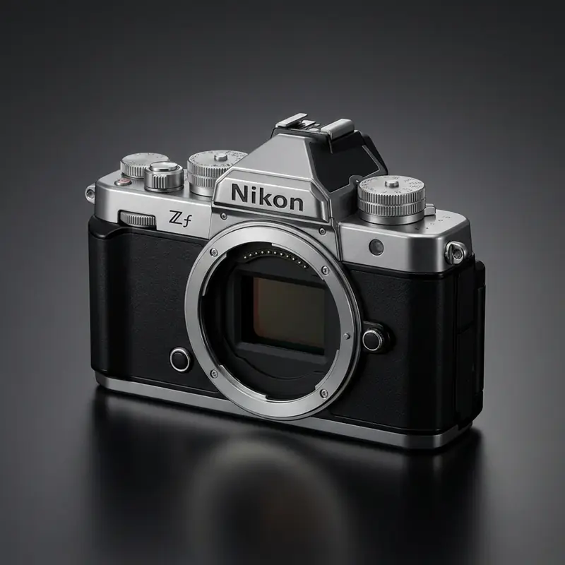
Nikon Zf
A full-frame body in the chassis of an FM2 film camera. Mechanical dials for ISO, shutter, and exposure compensation. Same sensor as the Z5 II but with a much better AF system. Best for: photographers who want full-frame quality and the experience of shooting with dials.
What to buy with the body
- 24-70mm f/2.8 — the most important professional zoom. $900-$2,300 depending on mount. Use it for two years before adding anything else.
- 70-200mm f/2.8 (or 50-150mm f/2 on Sony) — for events, weddings, sports. $1,300-$2,800.
- 85mm f/1.8 (or 85mm f/1.4 GM if budget allows) — for portraits and low-light. $600-$1,800.
- 35mm f/1.4 or f/1.8 — for documentary, street, environmental portraits.
- Memory cards: Match the body's spec. CFexpress Type B for Nikon Z6 III and Canon R6 III. CFexpress Type A or UHS-II SD for Sony A7 V.
- 2-3 spare batteries and a USB-C charger that charges in-camera.
Tier 4 · Professional
Flagship bodies for working pros
$3,500 – $6,500 body only
You earn money from photography. Your gear has to work in rain, dust, sub-zero temperatures, and 14-hour shoot days. Resolution, speed, and reliability matter. These are the bodies that the working pros actually buy — not the marketing-flagship show ponies.
Top picks
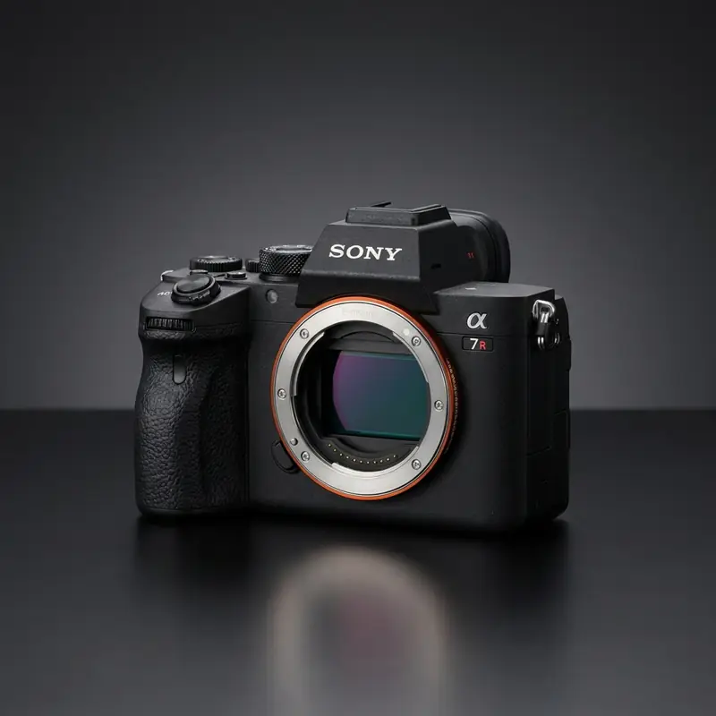
Sony α7R V (A7R5)
The highest-resolution full-frame body in production. 61MP gives genuine medium-format-like cropping latitude. 8K video. Best landscape and studio camera on the market. Trade-off: 10fps (not a speed body). Best for: landscape, architecture, studio, fashion, and product work where detail and cropping matter more than speed.
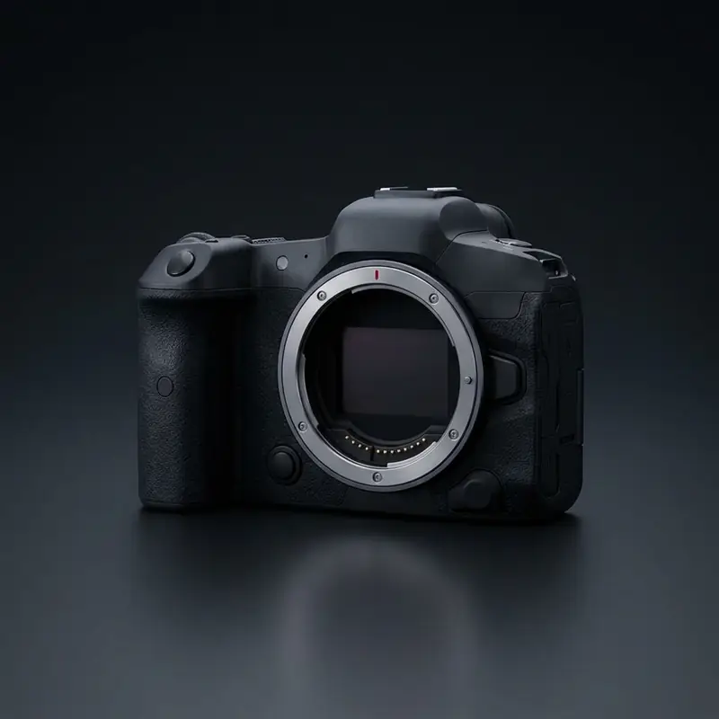
Canon EOS R5 Mark II
The best balanced one-body solution in 2025. 45MP stacked sensor. 30fps with full AF/AE. 8K/60p RAW internal. The most versatile pro body on the market. Best for: working pros who need one body that handles stills and video across every genre.
Nikon Z8
The "mini Z9." Same stacked sensor as the flagship, in a smaller body, $2,000 cheaper. Best-in-class RAW video. Nikon ergonomics are unbeatable. Trade-off: battery life is shorter than the Z9; some users miss the vertical grip. Best for: pros who shoot a lot of video alongside stills, and value ergonomics.
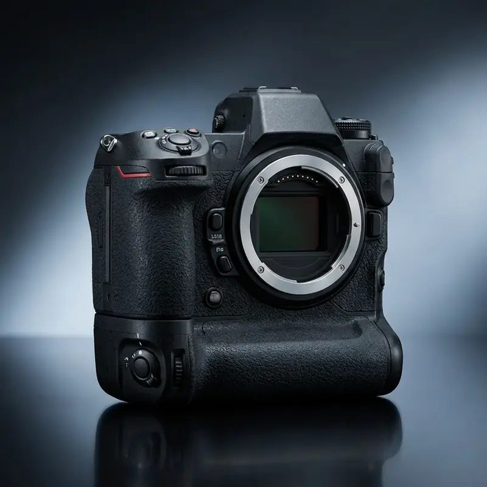
Nikon Z9
Nikon's flagship. Built-in vertical grip. Mechanical shutter removed entirely (replaced with electronic). Pro build. The workhorse for sports and wildlife at Nikon. Best for: sports, wildlife, and news photographers who shoot thousands of frames a day.
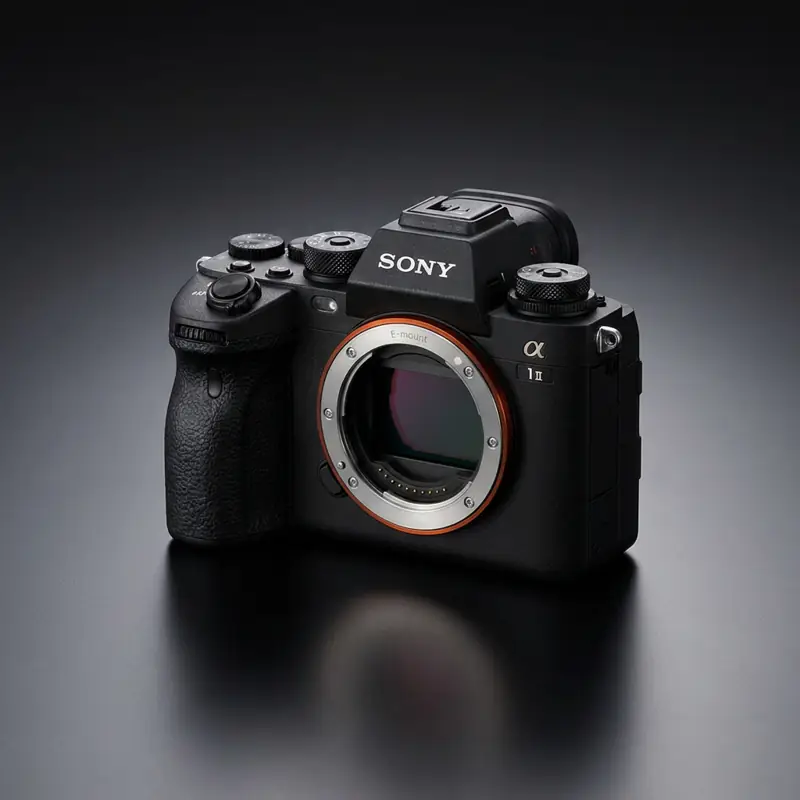
Sony α1 II
The most expensive — and the most capable — body on the market in 2025. 50MP + 30fps + 8K in a single body. Sony's flagship. No real weakness. Trade-off: the price. Best for: pros who need everything (resolution, speed, video) in one body, and can write off the cost against revenue.
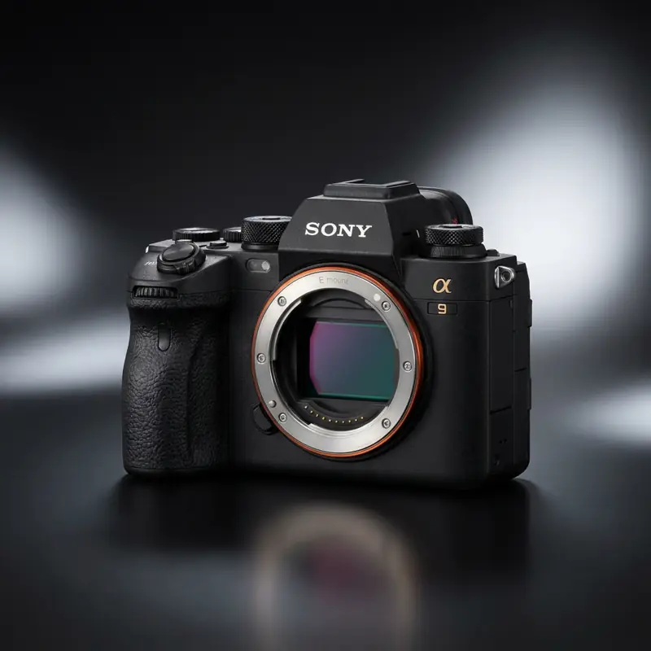
Sony α9 III
The only full-frame camera with a global shutter — no rolling shutter at all, no flash sync limit, blackout-free 120fps. The fastest sports body in production. Best for: sports and action specialists who need every technical advantage.
What to buy with the body
- The "trinity" zooms: 16-35mm f/2.8, 24-70mm f/2.8, 70-200mm f/2.8. Together: $4,000-$7,000. These three lenses cover 90% of professional work.
- Two flagship primes: Usually 35mm f/1.4 and 85mm f/1.4. $1,500-$2,800 each.
- Two of every body if you shoot paid work. Redundancy is non-negotiable.
- CFexpress cards: 2x 256GB minimum, Type A (Sony) or Type B (Canon/Nikon).
- 4-6 batteries + dual charger. Mirrorless flagships eat power at 30fps.
- Hard drives: Two copies of every shoot, on different media, with one offsite. See the Pricing & Licensing lesson for the discipline of archive management.
SIDE BY SIDE
All bodies at a glance
Every camera on this page in one table. Prices are approximate US dollar street prices for new bodies (2025–2026). The check marks indicate features that meaningfully affect the photographer's experience, not just spec-sheet wins.
| Model | Sensor | MP | IBIS | Burst (e-shutter) | 4K Video | AF Subject AI | Weight | Price (new) |
|---|---|---|---|---|---|---|---|---|
| Fujifilm X-T30 III | APS-C | 26 | No | 20 fps | 4K/60p | Yes | 383g | $900 (kit) |
| Sony α6100 | APS-C | 24 | No | 11 fps | 4K/30p | Yes | 396g | $750 (used) |
| Canon EOS R50 | APS-C | 24 | No | 12 fps | 4K/30p | Yes | 328g | $680 (kit) |
| Nikon Z50 II | APS-C | 20 | Yes | 11 fps | 4K/60p | Yes | 450g | $1,000 (kit) |
| Sony α6700 | APS-C | 26 | Yes | 11 fps | 4K/120p | Yes | 493g | $1,400 |
| Fujifilm X-T5 | APS-C | 40 | Yes | 15 fps | 6.2K/30p | Yes | 557g | $1,700 (kit) |
| Nikon Z5 II | FF | 24 | Yes | 11 fps | 4K/60p | Yes | 670g | $1,500 (kit) |
| Canon EOS R8 | FF | 24 | No | 40 fps | 4K/60p | Yes | 461g | $1,500 |
| Sony α7C II | FF | 33 | Yes | 10 fps | 4K/60p | Yes | 514g | $2,200 (kit) |
| Sony α7 IV (used) | FF | 33 | Yes | 10 fps | 4K/60p (crop) | Yes | 659g | $1,500 used |
| Nikon Zf | FF | 24 | Yes | 14 fps | 4K/60p | Yes | 710g | $2,000 (kit) |
| Nikon Z6 III | FF | 24 | Yes | 20 fps | 6K/60p RAW | Yes | 760g | $2,100 |
| Canon EOS R6 III | FF | 33 | Yes | 40 fps | 7K/60p RAW | Yes | 670g | $2,800 |
| Sony α7 V | FF | 33 | Yes | 30 fps | 4K/60p | Yes | 658g | $2,900 |
| Sony α7R V | FF | 61 | Yes | 10 fps | 8K/24p | Yes | 723g | $3,900 |
| Nikon Z8 | FF | 45 | Yes | 20 fps | 8K/60p RAW | Yes | 910g | $4,000 |
| Canon EOS R5 II | FF | 45 | Yes | 30 fps | 8K/60p RAW | Yes | 746g | $4,300 |
| Nikon Z9 | FF | 45 | Yes | 20 fps | 8K/60p RAW | Yes | 1,340g | $5,500 |
| Sony α9 III | FF | 24 | Yes | 120 fps | 4K/120p | Yes | 703g | $6,000 |
| Sony α1 II | FF | 50 | Yes | 30 fps | 8K/30p | Yes | 743g | $6,500 |
LENS ECOSYSTEMS
The mount matters more than the body
You are not buying a camera. You are buying into a lens mount — the system of lenses you will use for the next decade. Bodies change every 3-5 years. Lenses change every 10-20. Choose the mount you want to grow into, then pick the body that gets you into it affordably.
Three rules of thumb for first lenses after your kit zoom:
- Buy the 50mm f/1.8 first. Cheap, sharp, teaches you depth of field. Every system has one. ($100-$300)
- Then the 24-70mm f/2.8 (or f/4 if budget is tight). The professional standard zoom. Use it for a year before adding anything else. ($500-$2,300)
- Then a specialty prime — 35mm, 85mm, or 16-35mm depending on what you actually shoot. By this point you will know.
Sony E / FE
Sony · 400+ lenses
Largest and most diverse ecosystem. The safe long-term choice.
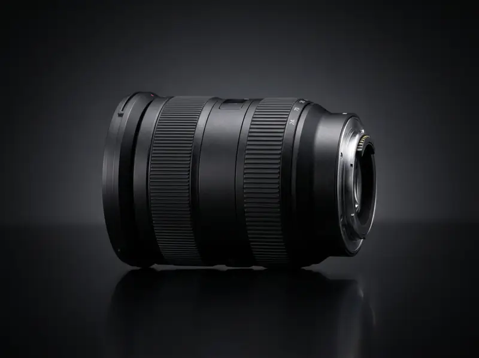
Canon RF / RF-S
Canon · 80+ native RF lenses
Canon restricts third-party AF lenses on RF mount. Native lineup is small but excellent.
Nikon Z (FX & DX)
Nikon · 100+ native lenses
Mature system, excellent optics, growing third-party support from Viltrox and Tamron.
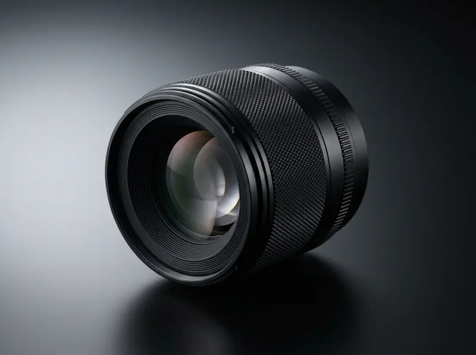
Fujifilm X
Fujifilm · 40+ native lenses (APS-C only)
APS-C only. Stays compact. Excellent film simulations mean great JPEGs straight out of camera.
DECISION GUIDE
Which one is right for you?
Answer the questions below honestly. The right camera for a 16-year-old who just discovered street photography is not the right camera for a 45-year-old wedding photographer.
Q1 · What kind of photography do you actually do?
If "I don't know yet"
You are at Level 1 of the curriculum. The right answer is the cheapest body that gets you the standard kit zoom and a 50mm f/1.8. Fujifilm X-T30 III or Sony α6100 (used). Do not spend more than $900.
→ Tier 1 picksQ2 · Do you shoot more video than stills?
If yes
Skip APS-C entirely. The Sony α7 IV / α7C II give you the strongest hybrid video ecosystem. The Canon R5 II is the most powerful hybrid body in 2025 for video specifically. For pure video-first work, consider the Panasonic S5 II or Nikon Z6 III for the best video specs under $2,500.
→ Sony α7C II, Canon R5 II, Nikon Z6 IIIQ3 · Do you want to keep this system for 10+ years?
Pick the mount, then the body
You are not married to a single body, but the lenses you buy today should still work on tomorrow's flagship. Sony E-mount has the largest, most diverse lens selection including best third-party support. Canon RF is closed to third parties but has excellent native L glass. Nikon Z is the sweet spot for glass quality.
→ Start with the system, not the bodyQ4 · Budget reality check
Buy the body, then lenses, then maybe more body
A $2,000 camera with a $300 lens takes worse photos than a $1,500 camera with an $800 lens. Allocate at least 50% of your budget to glass. A photographer with one great lens and a used body will always outperform a photographer with a flagship body and the kit zoom.
→ Lenses outlast bodies by 3-5xQ5 · Are you already invested in a system?
Stay in your mount
If you have Canon EF, Nikon F, or Sony A-mount lenses, look at the adapter path. Sony E accepts most third-party lenses via cheap adapters. Nikon Z and Canon RF have first-party adapters that preserve full autofocus on many older lenses. Do not switch systems just because of one review.
→ Adapter + familiar glass > new system + new glassQ6 · Is the reviewer's favorite camera the right one for you?
Probably not
Every review has a winner that fits the reviewer's hand, eye, and genre. Rent before you buy if you can. Lens Prototypes and MPB both rent cameras. If a body feels wrong in the hand after 30 minutes, it will feel wrong after 30 months.
→ Rent first, then buySAMPLE WORK
What this gear can actually produce
Spec sheets are easy. Real photographs are not. The images below were shot on the kinds of cameras and lenses recommended on this page — one per tier, one per use case — so you can see what the equipment actually delivers in the hands of a competent photographer. These are the kinds of results you can expect, not a guarantee of identical images.
TIER 0 · PHONE
Golden hour portrait, 2x lens
iPhone 17 Pro · 48mm 2x tele · ISO 64 · 1/250s · f/1.78 · ProRAW
TIER 1 · FIRST CAMERA
Layered ridges at sunrise
Fuji X-T30 III · XF 18-55mm f/4 @ 24mm · ISO 200 · 1/125s · f/8 · Velvia
TIER 1+ · 50mm PRIME
Decisive moment, shallow DoF
Nikon Z5 II · Z 50 f/1.8 S · ISO 800 · 1/250s · f/1.8
TIER 2 · FULL-FRAME
Documentary portrait, available light
Sony α7C II · FE 35 f/1.4 GM · ISO 400 · 1/200s · f/2.0
TIER 2 · LOW-LIGHT
Neon city, tripod-mounted
Canon EOS R6 III · RF 24-70 f/2.8 L @ 35mm · ISO 100 · 8s · f/8
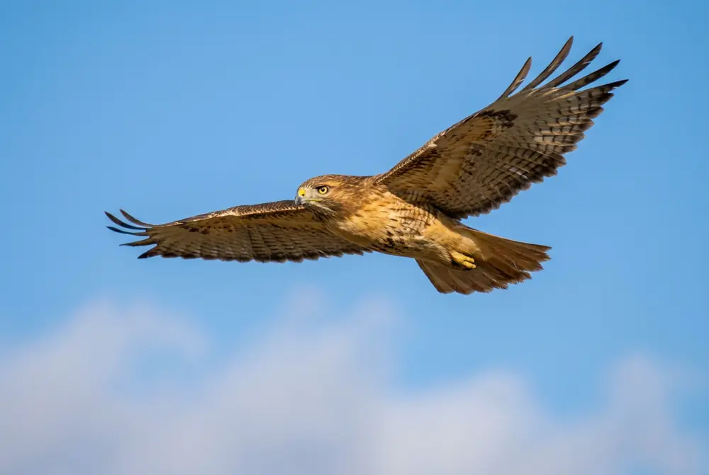
TIER 3 · ADVANCED
Bird in flight, 600mm equivalent
Nikon Z6 III · Z 180-600mm f/5.6-6.3 VR @ 600mm · ISO 800 · 1/2500s · f/6.3
TIER 2 · SPECIALTY
Macro, dewdrops on a petal
Sony α7 IV · 90mm f/2.8 Macro G · ISO 200 · 1/200s · f/8 · ring light
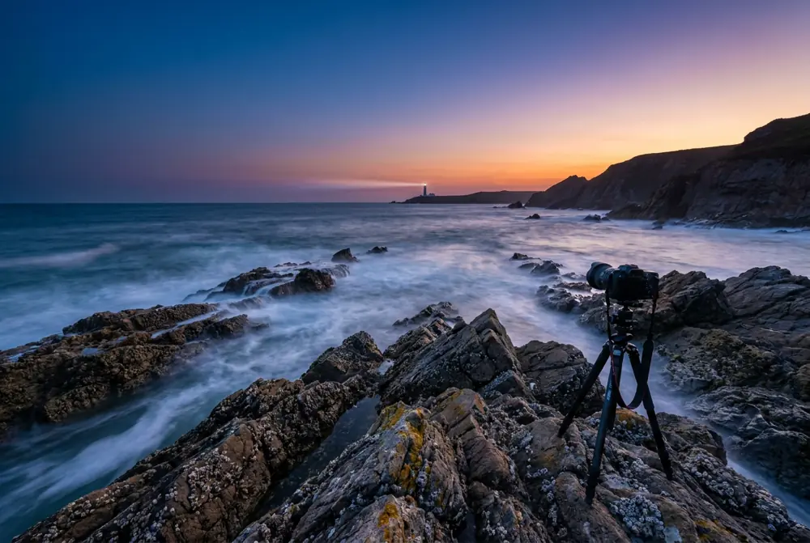
TIER 4 · FLAGSHIP
Blue hour coastline, long exposure
Sony α7R V · FE 16-35 f/2.8 GM @ 22mm · ISO 100 · 15s · f/11
WHAT TO AVOID
Common mistakes when buying your first camera
Photography communities have seen every mistake. The list below is the short version of "what I wish someone had told me before I spent $3,000."
Buying a flagship body to "grow into"
You will not grow into a $6,000 body. You will use it for six months, never touch 90% of the features, and feel guilty every time you leave it in the bag. Buy a body you can use 100% of today. Bodies depreciate. Lenses appreciate.
Buying a "kit" without a kit lens plan
The kit zoom is fine for 30 days, then it sits in the drawer. Plan from day one to add one fast prime. The 50mm f/1.8 (or its equivalent) is the highest ROI purchase in photography.
Switching systems to follow a YouTube review
Selling two lenses to afford one new body is almost always a bad trade. The lenses you already own are worth more to you than the new body's marginal improvements. Watch the review, then keep what you have.
Spending on accessories before lenses
Tripods, filters, bags, lens hoods, extra batteries — these are real costs, but they are the last 5% of the kit. The lens is the first 80% of the image. Buy glass first.
Trusting a "best of 2025" list as a buying guide
These are written by reviewers with different shooting styles, different hands, and different needs. Use them as a shortlist, then verify with reviews from photographers who shoot what you shoot.
Buying more megapixels than you need
24MP is enough for an A2 print at 300 DPI. 33MP is enough for A1. 45MP is enough for poster-sized. More megapixels mean larger files, slower workflows, and more storage — without making most photographs visibly better.
Skipping the "boring" kit lens for a fast prime
Counter-intuitive but true: you need the kit zoom to learn focal length. A 50mm prime teaches you depth of field, not composition. Shoot 1,000 frames with the zoom, then choose your specialty prime.